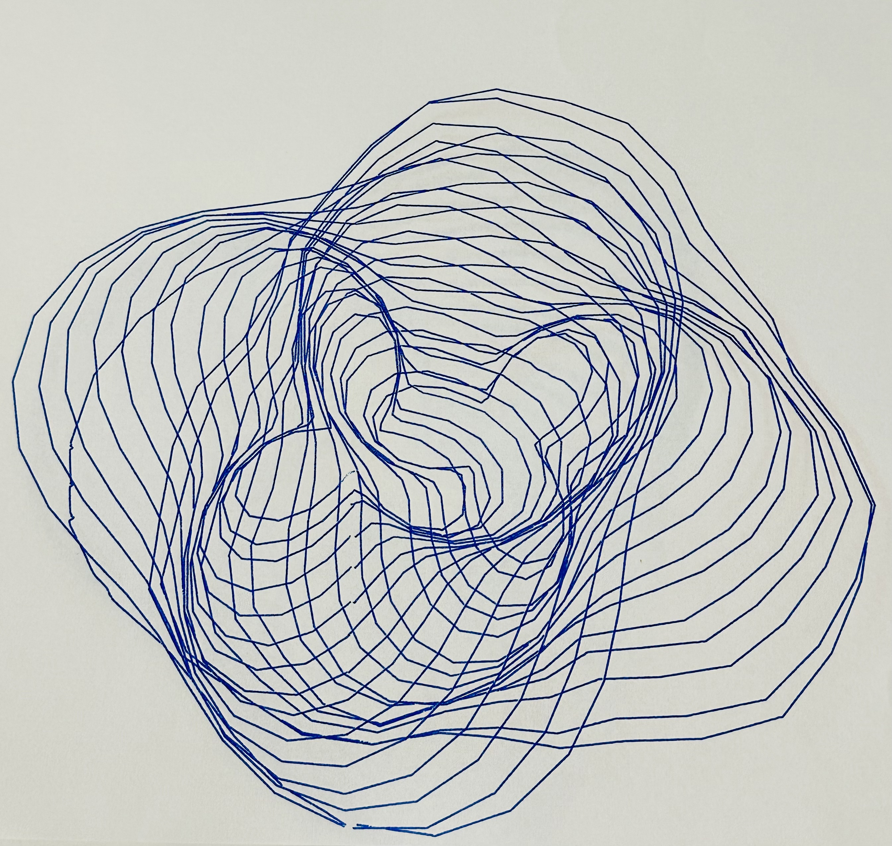
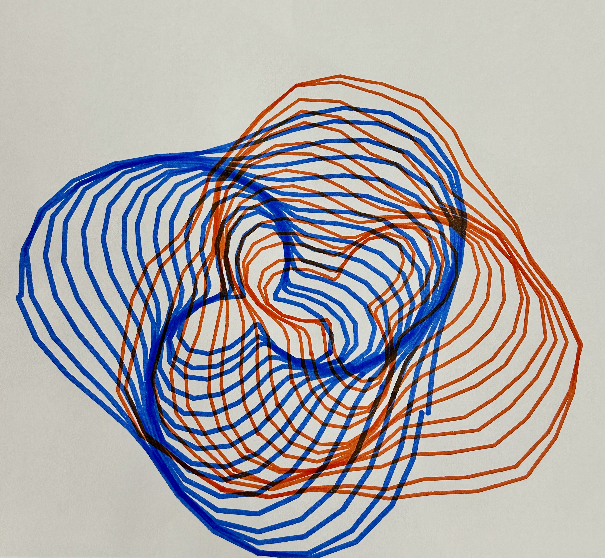

This is a generative drawing made from two overlapping sets of distorted concentric rings that expand from different center points. The main iterative process uses repetition, sine and cosine waves, randomness, and mouse interaction to change the size, distortion, and distance between the two ripple fields. I used the school’s LLM to help develop my original idea of creating two overlapping ripple forms into code. I described the kind of distorted, organic rings I wanted to create and the LLM helped introduce me to using sin() and cos() to calculate points around a circle and change their radius to create the wavy distortions. It also helped me understand how the angle could be stepped through with TWO_PI and used with vertex() to construct each ring as a custom shape. From there, I experimented with the code by changing the number and spacing of the rings, wave frequencies, random jitter, and amount of distortion. I also connected mouseX to the distance between the two ripple centers and mouseY to the amount of turbulence so I could interactively explore different compositions before plotting one.
I thought it was really cool to experiment with the pen plotter and watch it continuously recreate my digital drawing, especially since I could switch colors and use different drawing utensils to change the final appearance. It took a few tries to get the result I wanted because I wasn’t sure how to center the drawing on the page, and sometimes the plotter lifted or shifted the paper, causing some lines to be out of place. Overall, I enjoyed using the plotter and was surprised by how precisely it followed the lines from my drawing. For my next drawing, I want to explore more detailed patterns and complicated shapes that would be difficult to draw by hand, as well as experiment with pens of different thicknesses.

